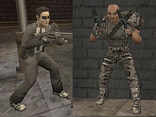
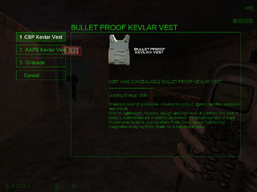
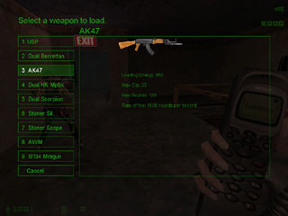
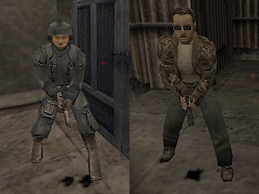
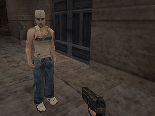

» The Hud
» The Maps
» Game Elements
» Playing
» Cvars

In Existence you choose to join the rebels or agents team. As an agent your role is defensive, defending neuoteks assets. As a rebel your role is to destroy neuroteks facilitties. The teams do look quite different, with the agents being a lot smarter dressed, mostly suits and shirts, the rebels however are laden in leather clothing, jumpsuits and boots. Below you can see how different they look.

In existence you have to buy your weapons, armour, ammo and abilities. This is done through your cellphone. Selecting your cellphone and left clicking brings up a buy menu where you can purchase your items. They all cost loading points and these are deducted from your total as you purchase.
 
In other mods you may die and respawn, or die and be left out the game till the end of the round. In existence you respawn, but not as a rebel or agent. Once you die you are stripped down to a swat member (if you were an agent) or a civilian (if you were a rebel). These roles are a lot more limited than the previous ones. As a civ/swat you arent able to buy weapons, ammo or any extras (such as abilities). Instead you now really just have to help your team as much as you can. While in this form being killed isnt added to your score, as your role is so insignificant.

While running around you may see civilians like the ones below. These are not players, but instead innocent standers by. You may choose to use these as human shields, but be careful, as they arent walls and a single bullet can kill them. Another thing to note is that if your health dips below 25, you start bleeding. This doesnt drain your health, it just leaves a trail for people to follow you. You cannot bandage yourself.
